RBMI ILMS 2.0 | Illustrated edition | 24 October 2026
Start here and library directory
Open https://rbmi-ilms.vercel.app in a current browser. RBMI ILMS 2.0 uses React, shared Supabase PostgreSQL and Supabase email/password authentication. GitHub and hosting dashboard accounts are separate from library sign-in accounts.
How to use this section
Sign in with your registered email and private password. Verify that the connection indicator says Supabase connected.
Select RBCET for the shared RBCET / RBMI Central Library, RBCP for Pharmacy, RBCN for Nursing, or RBGN for its separate library. RBMI is a campus in the shared library, not another issue desk.
The single network administrator is rahul.r@rbmi.in and manages all four libraries. Nidhi Dewal, nidhi@rbmi.in, serves RBCET/RBMI. Rekha, rekha@rbmi.in, serves RBCP. Sheeba, sheeba@rbmi.in, serves RBCN. Raveena, raveena@rbmi.in, serves RBGN.
Use the sidebar modules. On a phone open the navigation menu. Refresh data to see a colleague's recent changes. Sign out before leaving a shared computer.
Notes and limits
A yellow Sample data banner means an isolated browser demonstration with fictional records. Live staff must use the Supabase-connected deployment.
New accounts receive a one-use invitation email and choose their own private password. A patron card number is not a password. Existing passwords are retained.
Screen guide
Captured from the application with sample records. Screen values are examples; your records and permissions may differ.
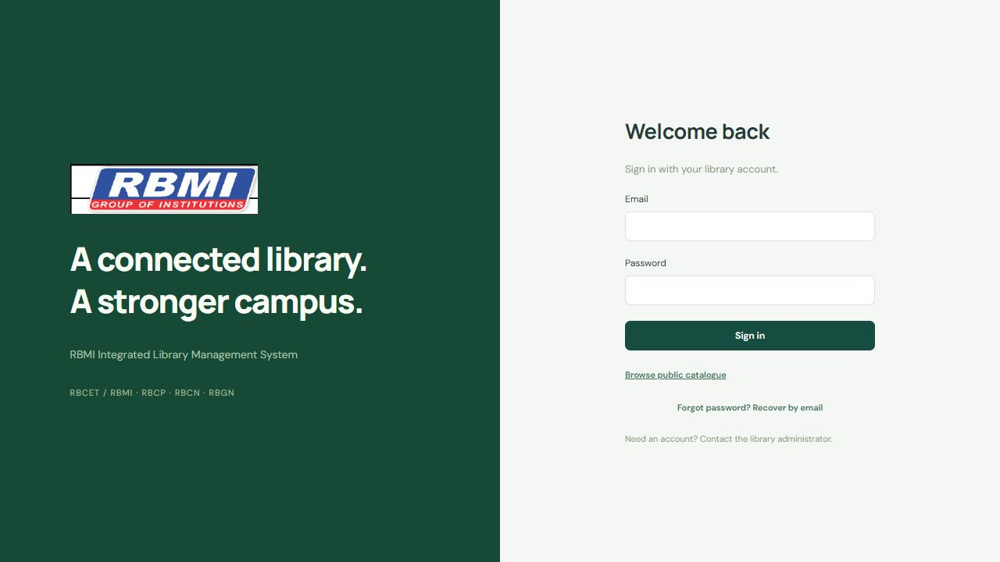
Screen 1. Sign in with the registered email and password. The public catalogue link is available without signing in.
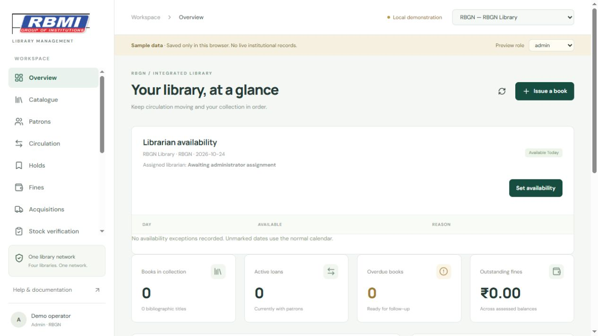
Screen 2. Use the library selector at the top. RBGN is an independent library; RBCET and RBMI share the central library.
Accounts and role permissions
Permissions are enforced by the database using memberships and designated librarian assignments. Editable user profile metadata is never used to grant access.
How to use this section
Admin manages all libraries, policies, accounts, assignments and audit records. The system permits one network administrator.
A librarian manages the assigned library's catalogue, patrons, circulation, fines, availability, acquisitions, authorities and serials. Each library has a distinct primary librarian.
Assistant operates circulation and holds. Accountant records payments and waivers. Auditor reads records and reports. Staff access is limited to assigned libraries.
Patron sign-ins must be linked to a patron UUID. They see the catalogue and their own loans, holds and fines, and can renew their own loans or manage their own holds.
Admin opens Settings > Accounts to create staff, update non-admin email addresses or send recovery messages. Sensitive actions require the administrator's current password.
To provision a patron sign-in, create its email/password identity in Supabase Auth, then assign patron role with the linked patron UUID in Institution access.
Notes and limits
The create-account form supports librarian, assistant, accountant and auditor roles. Library records and Auth users are separate entities.
Retained sample accounts ending in .invalid cannot receive recovery emails. Replace them with real individual accounts before operational use.
Imported students and faculty receive the Patron role linked to their own borrowing record, never a librarian or administrator role. Existing staff logins are not automatically linked by matching email.
Screen guide
Captured from the application with sample records. Screen values are examples; your records and permissions may differ.
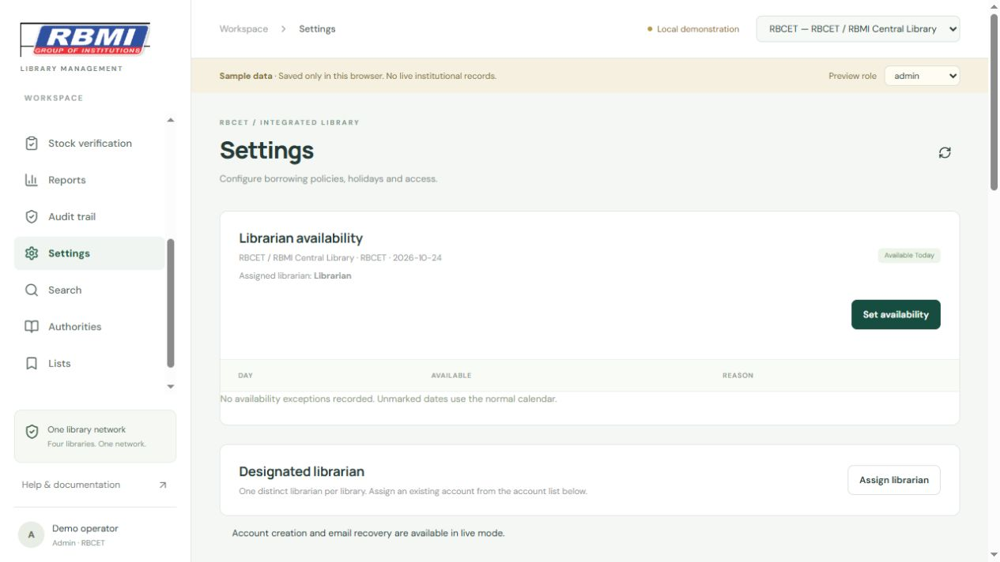
Screen 1. Settings contains the librarian assignment and access controls. Only the administrator manages roles and holiday calendars.
Change or recover a password
Email recovery is available to every role, including the administrator, through Supabase Auth and the configured SMTP service.
How to use this section
For a newly invited student, faculty member or staff member, open the invitation email and choose your own strong password. No default password is created or emailed. Save, then sign in again using your email and chosen password.
When signed in, select Change my password. Enter the current password, a different new password and matching confirmation.
When unable to sign in, choose Forgot password? Recover by email. Enter the registered address and check inbox and spam folders.
Open the newest recovery link. Continue securely if prompted, then enter and save a matching new password. Successful recovery signs you out; sign in with the new password.
Use 12 to 128 characters, including uppercase, lowercase, a number and a symbol. Choose a unique password for each person.
Admin may reset another assigned account in Settings > Institution access after verifying the person's identity and entering the administrator password. Share the temporary password privately and ask the person to change it.
For an expired, incomplete or previously used link, request a new email. Ask admin to correct a wrong registered email.
Administrator: open Settings > Administrator two-step verification, select Set up authenticator, scan the private QR code, and enter its current six-digit code. Select Verify and enable protection. Future administrator sessions must verify the second factor before records or account tools can be accessed.
Notes and limits
Staff cannot reset the administrator; the administrator recovers through their own registered email.
Old passwords cannot be read from Supabase. Passwords are excluded from audit records, GitHub and public source downloads. An initial-password file becomes stale after users change their passwords.
Pending password setup is enforced by the database. Legacy accounts that still have an initial password use the current-password form shown in the screenshot. New invitation accounts do not need an initial password. An expired setup invitation can be resent by the librarian from import results, or by the administrator through account recovery.
Screen guide
Captured from the application with sample records. Screen values are examples; your records and permissions may differ.
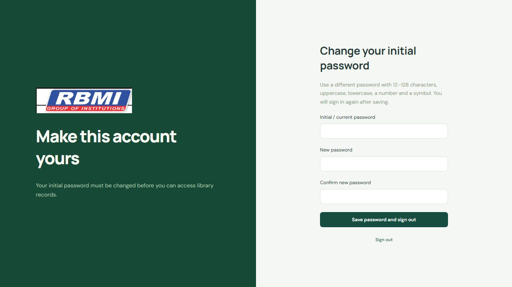
Screen 1. Legacy initial-password setup is shown here. New invitation users choose their own password without an initial-password field; existing account passwords remain unchanged.
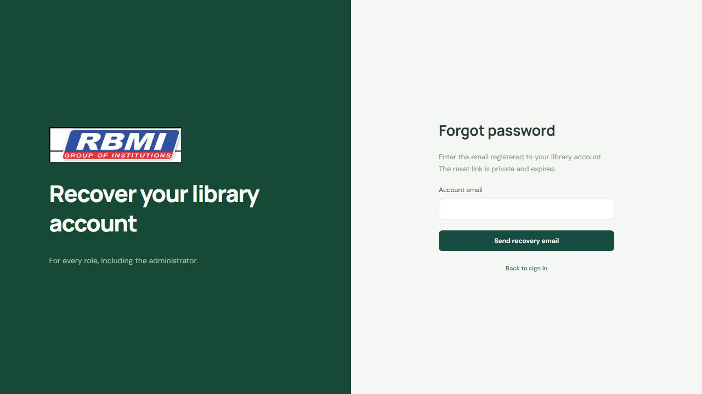
Screen 2. Forgot password asks for the registered email. Request the message and use the newest recovery link; never share passwords.
Overview and the daily desk routine
Overview shows physical-copy and bibliographic-title totals, active and overdue loans, posted outstanding fines and collection status for the selected library.
How to use this section
At opening verify the library, designated librarian and availability panel. Record any librarian absence for the relevant date.
Review Loans needing attention and waiting holds. Use Issue a book, or open Circulation for return and renewal.
Verify patron identity and book barcode for every transaction. Review any rejection before repeating it.
Refresh after colleagues' changes. At closing export required reports, inspect audit entries and follow the backup procedure.
Notes and limits
Outstanding fines shows assessed unpaid balances, not projected charges on every overdue active loan.
The application refreshes after its own changes. It does not subscribe to automatic real-time updates.
Screen guide
Captured from the application with sample records. Screen values are examples; your records and permissions may differ.
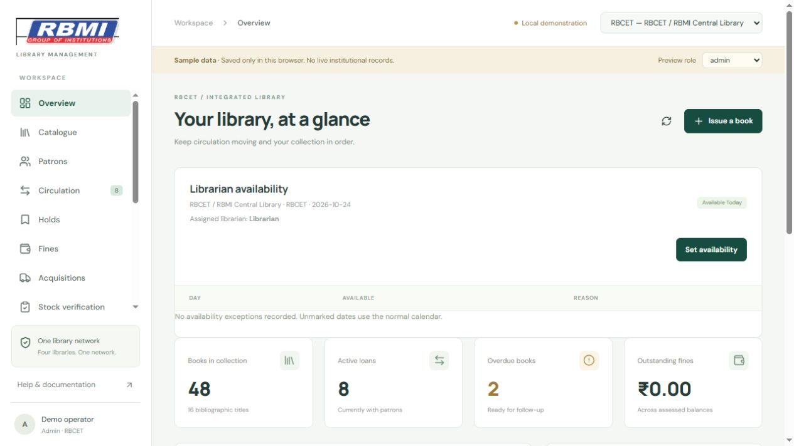
Screen 1. Check the selected library, today’s availability, collection totals, active loans, overdue books and assessed fine balance.
Librarian availability and fine-free days
An unavailable date is a full-day exception for one library. The database records the date, reason, operator and change time. Partial-day closures are not modeled.
How to use this section
In Overview or Settings > Librarian availability, verify the selected library and librarian name.
Select the date, set availability off, enter a reason such as Librarian on approved leave, and save.
Confirm the history entry and the No fine badge for a closed current day. Correct an erroneous closure by restoring availability with a reason.
The designated librarian can edit today or a future date up to one year ahead. Only admin can correct historical dates.
Fine calculation skips unavailable dates only for this library. A due date that falls on a closed day moves to the next eligible open date.
Example: at INR 2 per eligible overdue day, three weekdays with one recorded unavailable day produce INR 4 before grace and cap. A date that is both a holiday and unavailable is excluded once.
Notes and limits
An unmarked date follows the normal calendar. The system does not infer absence from failed logins or a librarian not signing in.
Historical calendar corrections do not rewrite an already assessed fine. Review the original return and use an authorized audited waiver where appropriate.
Screen guide
Captured from the application with sample records. Screen values are examples; your records and permissions may differ.
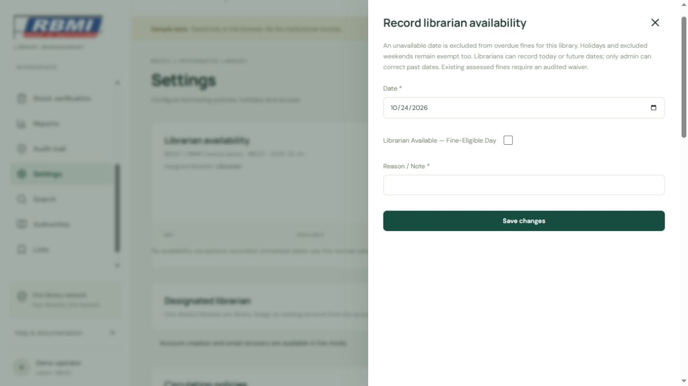
Screen 1. Choose the date, availability and reason. An unavailable date is excluded from fines only for the selected library.
Patrons, faculty and institute assignments
Patrons are borrowing memberships, separate from Auth users. All supplied RBCET student files are assigned to the shared RBCET/RBMI library.
How to use this section
Open Patrons and search by name, code, category or department. Source card number is the patron code; roll number is used when no card number was supplied.
Expand View profile to inspect supplied roll/card numbers, institute, course, branch, year, semester, admission date, mobile, email, gender and birth date where present.
To add faculty individually, select the library, choose Add patron, set category Faculty and choose the institute. RBCET and RBMI share one library but remain separate institute choices. Enter the faculty employee/patron code, name and department, then save.
Add patron requires unique code, name, category and active status. Email, department/class and expiry are optional.
To edit a membership, retain its existing code. The core editor changes name, email, category, department, active flag and expiry; uploaded additional profile fields remain preserved.
Deactivate or expire memberships when borrowing must stop. Preserve their loan history. Export CSV only for authorized institutional work.
Patron search runs against the database. Use Previous / Next beneath the table to browse 50 matching records per page. CSV export reads every matching page, not just the visible rows.
Notes and limits
Source blanks remain blank. No birth dates, contact information or expiry dates are invented.
Student and faculty bulk imports create linked patron logins when a unique real email is supplied. Student profiles and source archives are private and never appear in anonymous OPAC responses.
Faculty memberships use faculty circulation policies. Bulk uploads create linked Patron-role accounts; individual Add patron creates only the borrowing membership.
Screen guide
Captured from the application with sample records. Screen values are examples; your records and permissions may differ.
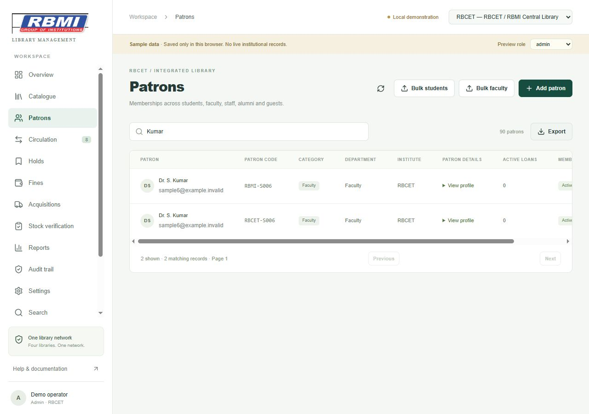
Screen 1. Search queries the full patron register. Previous / Next browse database pages; Bulk students and Bulk faculty provide invitation-based account setup.
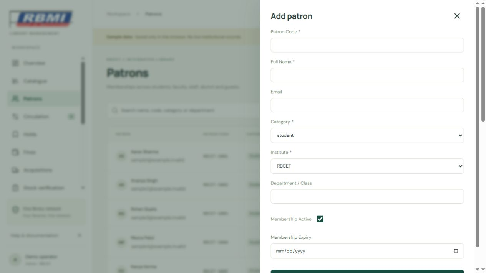
Screen 2. For a faculty membership, choose Faculty and the institute. The patron code identifies the borrowing record.
Bulk uploads and the supplied Excel import
The supplied workbooks were processed through a controlled administrative import. Regular application Bulk upload uses UTF-8 CSV, with preview and confirmation before a transactional batch.
How to use this section
Choose the correct library. Open Catalogue > Bulk upload for books, or Patrons > Bulk students / Bulk faculty, then download its template.
Books require title, author, accession and barcode. Optional fields include ISBN, publisher, subject, classification, year, shelf and price. One row creates one physical copy.
Student CSV requires code and name; optional email, category, department, active and expires. Additional profile columns can be preserved through student imports.
Faculty CSV requires code and name. Set category to faculty; institute must belong to the selected library (RBCET or RBMI for the central library, otherwise RBCP, RBCN or RBGN). Optional columns include email, department, active and expires. Existing faculty codes update memberships; a code already used by a student or another category is rejected. Review the preview and approve the batch.
New templates omit passwords. Supply each person's real, unique email address for a secure invitation. A legacy password column is ignored and removed before profiles or audit records are saved. Existing accounts keep their current password.
Export Excel as UTF-8 CSV without converting identifiers into scientific notation or losing leading zeros. Use no more than 1,000 rows and 5 MB per batch.
Review errors and the first eight rows, confirm the checkbox and import. A failed row rolls the entire batch back.
Existing patron codes update core memberships. Duplicate book barcodes/accessions reject the batch. Review updates carefully; blank expiry clears it and blank active defaults to true.
The owner-provided import prepares 278 students and 26,071 book copies. One book row missing a barcode or title is held in the private review report. Original workbooks remain unchanged.
After memberships save, keep the page open while invitation emails are requested in batches of ten. Review Imported account results. Used/missing emails, inactive memberships and SMTP limits need review. Re-upload corrected rows to retry without replacing existing accounts. Use Resend setup email for a pending invitation.
Notes and limits
Protected archives retain source hashes, sheet names, row numbers and original fields. The BSCS sheet's incomplete header was mapped to the common 15-column book layout after inspection.
Missing authors use Unknown author. Missing or nonnumeric prices use zero operationally while retaining the original value in source details. Historical loans are not inferred from a stock list.
Membership records save transactionally; Auth invitations are a subsequent step with per-row results. A failed email does not undo a saved membership. Delivery depends on Supabase SMTP and provider quotas; the application never emails a plain-text password.
Screen guide
Captured from the application with sample records. Screen values are examples; your records and permissions may differ.
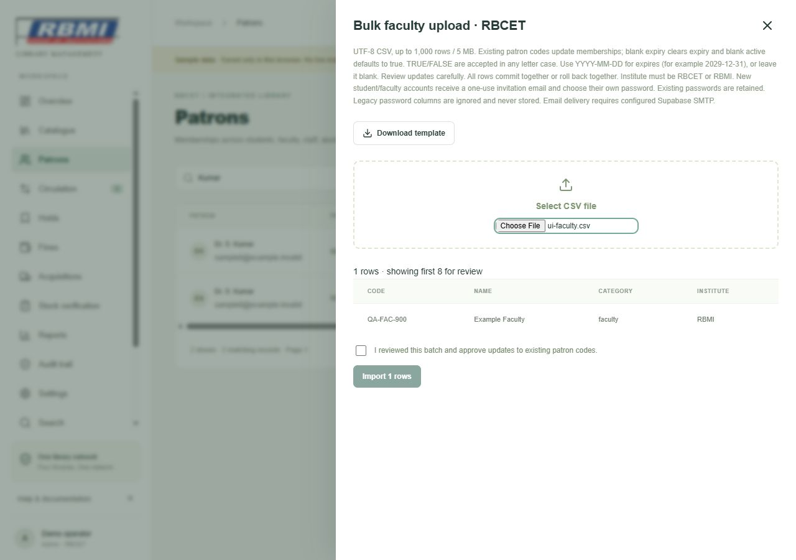
Screen 1. Download the faculty template, fill the membership fields and provide a unique real email. New accounts receive invitation emails; legacy password columns are ignored.
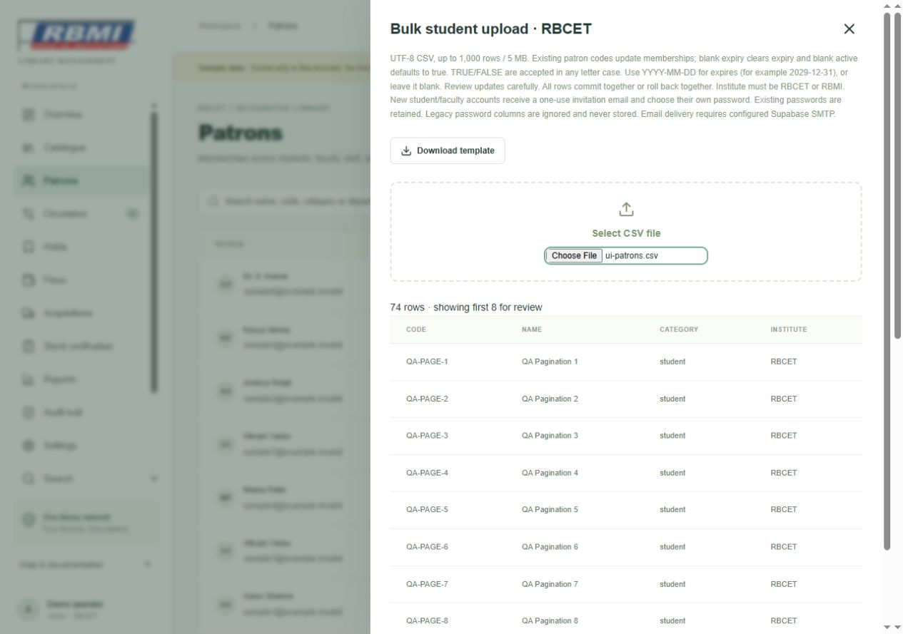
Screen 2. Student upload uses its own template. Review the preview and approval checkbox; a real unique email is needed for a new login.
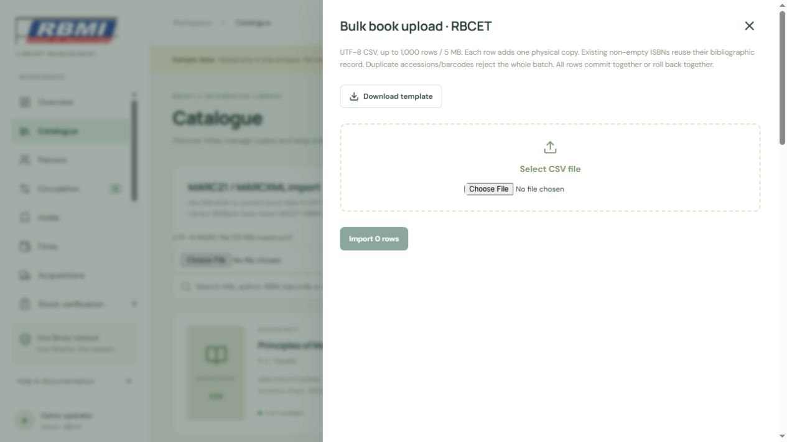
Screen 3. Book CSV upload adds physical copies. Review accessions and barcodes before approving the transactional batch.
Bibliographic records, copies and barcodes
A bibliographic record describes a title/edition. Each physical copy has its own accession, globally unique barcode, shelf, price and status.
How to use this section
Search Catalogue by title, author, ISBN, classification, barcode or accession. Use Show more to reveal further matching cards.
Add title requires title and author. Enter ISBN, publisher, subject, classification/DDC and publication year when known.
Open View copies > Add physical copy. Enter unique accession and barcode, shelf and nonnegative price.
Use Edit title to correct descriptive fields. Use Status with a reason for available, lost, damaged, withdrawn or missing copies. Loaned copies must first be returned.
Use Label to print a Code 128 barcode. Scan-test labels before applying them to books.
For imported copies, Source details shows original item type, collection, accession date, pages, publication place and notes when supplied.
Notes and limits
The provided workbook has barcodes but no separate accession column, so its barcode also serves as the accession.
The controlled import groups consistent descriptions into 9,668 bibliographic records. Regular CSV import reuses a matching non-empty ISBN; inspect editions before using that simpler path.
Screen guide
Captured from the application with sample records. Screen values are examples; your records and permissions may differ.
Screen 1. The catalogue separates bibliographic titles from copies. Use Add title, View copies and Bulk upload as appropriate.
MARC book migration
Catalogue > MARC migration supports UTF-8 ISO2709 .mrc and MARCXML .xml files, supplementing CSV and the controlled Excel import.
How to use this section
Prepare a UTF-8 file up to 10 MB and 1,000 physical copies. Convert MARC-8 through your cataloguing tools first.
Items use 952$p barcode, 952$i accession or barcode fallback, 952$a/$b library, 952$c shelf and 952$g price.
Select the file, review its preview and confirm the checkbox. Item library must match the selected workspace; RBMI is an alias for shared RBCET.
Import and inspect copy counts and identifiers. Invalid records, duplicate barcodes or cross-library items reject the whole batch.
Notes and limits
This is targeted MARC import, not a complete MARC editor, MARC-8 converter or lossless MARC export service.
Invalid record lengths, directories and terminators are rejected. XML document types and entities are prohibited.
Screen guide
Captured from the application with sample records. Screen values are examples; your records and permissions may differ.
Screen 1. The MARC21 / MARCXML import panel appears above the catalogue. Select UTF-8 MARC, review the mapped copies and confirm the import.
Issue, return and renewal
Issues store the library code/name, operator UUID, timestamp, barcode/accession, title and patron code snapshots. A book must return to its issuing library.
How to use this section
Choose the correct library and click Issue a book. Verify the explicit library code, scan barcode or accession and enter patron code.
Save. The server checks copy availability, membership/expiry, loan limits, overdue loans, balance threshold and FIFO hold priority. Due dates follow the library calendar.
Open Circulation and locate the active loan by book, barcode or patron. Verify the library column and due date.
Use Renew only when permitted. Overdue loans, exhausted renewals, waiting holds, inactive memberships and excessive balances block renewal.
Use Return in the same library. The server rejects another issuing library code even for admin. Return, fine posting and copy availability commit together.
Inspect the return notice and assessed fine. In Returned loans choose Receipt and print its library, patron, book and fine details.
Active and returned loan lists use database pages of 50 records. Search matches the full list. Use Previous / Next to navigate; overview statistics count all records even when only a preview is loaded.
Notes and limits
Each loan stores its policy values. Later policy edits apply to new loans; existing issues retain their recorded rules.
Do not repeat a successful return. The database rejects returns on a loan already closed.
Screen guide
Captured from the application with sample records. Screen values are examples; your records and permissions may differ.
Screen 1. Active loans show patron, accession, due date and actions. Check the issuing library before issue or return.Screen 2. Scan the copy barcode/accession and enter the patron code. The issuing library is shown and recorded.Screen 3. After a sample overdue return, the notice shows the fine assessed and the loan moves to Returned loans.Screen 4. Open Receipt for a returned loan. Verify patron, book, library and fine, then use Print receipt if needed.
Holds and reservation priority
Holds reserve a bibliographic title within a library, using a FIFO waiting queue ordered by creation time and identifier.
How to use this section
Choose Holds > Place hold, or Place hold in a title's copy drawer. Select a title and enter an active, unexpired patron code.
Review queue position, placement time and status. The same patron cannot have duplicate waiting holds on the same title.
Issue the next available copy to the first waiting patron. The server blocks queue bypass and marks the hold fulfilled when issued.
Cancel unwanted waiting holds. Staff manage the library queue; patrons manage only their own holds.
Notes and limits
A waiting hold blocks renewals of that title.
Pickup-expiry timers, automatic notification emails and inter-library transfers are not implemented. Use the approved institutional contact procedure.
Screen guide
Captured from the application with sample records. Screen values are examples; your records and permissions may differ.
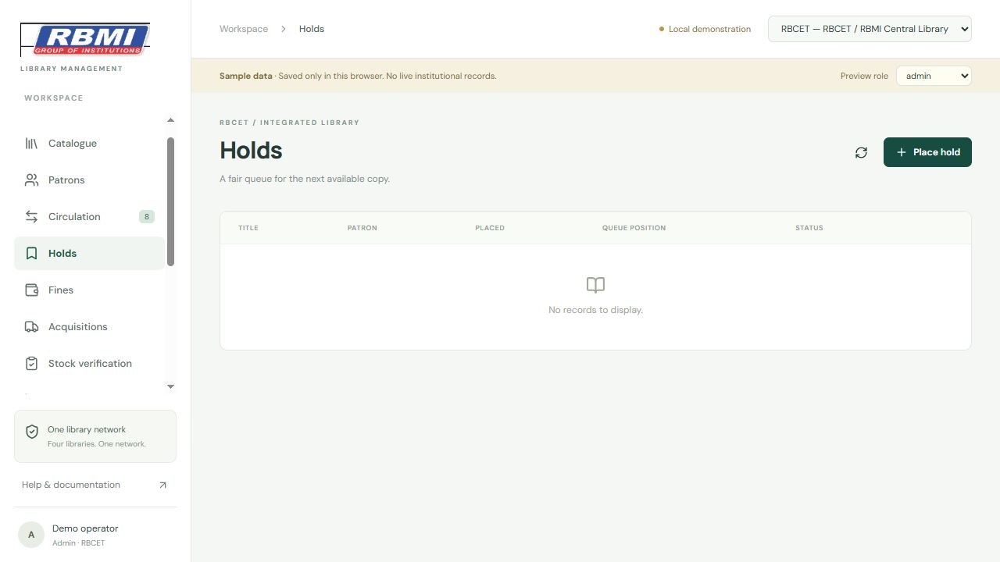
Screen 1. The hold queue is scoped to this library. Place hold opens the title and patron form.
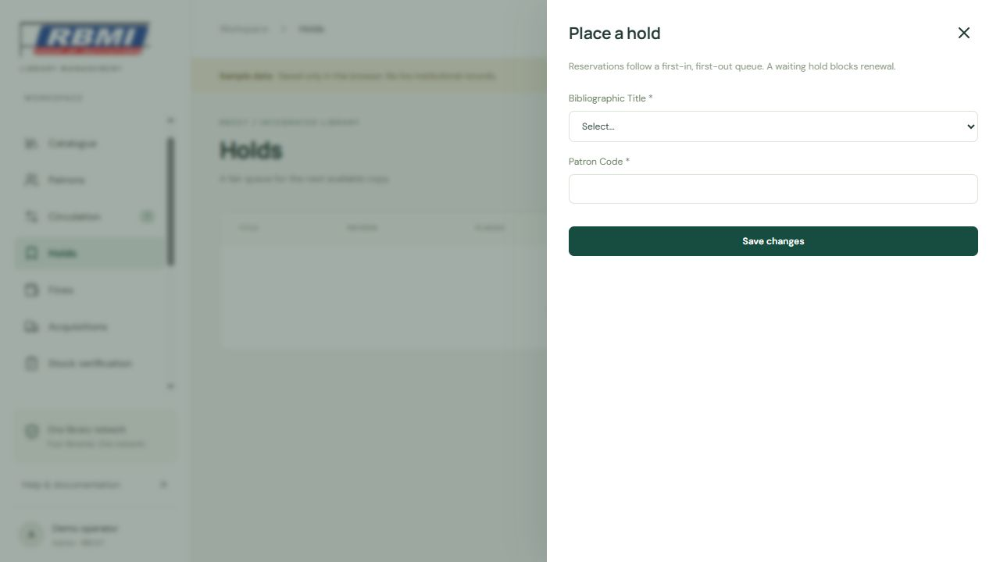
Screen 2. Select the bibliographic title and enter the patron code. The system checks the queue and borrowing eligibility.
Fine rules, payments and waivers
Fines are assessed on return, counting eligible dates after the due date through the return date under the issuing library calendar.
How to use this section
Admin opens Settings > Circulation policies to set loan days, maximum loans, renewals, daily fine, grace days, cap and blocking balance by category.
Add holidays in Settings. Weekend exclusion follows the saved policy. Holidays and explicit librarian-unavailable dates are excluded.
Subtract grace from eligible overdue days, floor at zero, multiply by daily rate and apply the cap. INR 2 times three eligible days minus one grace day equals INR 4.
Open Fines and inspect amount, paid, waived and remaining balance. Record Payment with a positive amount and receipt/reference.
Use Waiver with an authorized reason. Payment and waiver totals cannot exceed the assessed amount. Export and inspect the audit trail.
Notes and limits
Grace is counted in eligible days, not ordinary calendar days. Calendar changes do not recalculate posted historical charges.
Lost/damaged status does not automatically generate replacement-cost charges. Follow the institution's separate approval process.
Screen guide
Captured from the application with sample records. Screen values are examples; your records and permissions may differ.
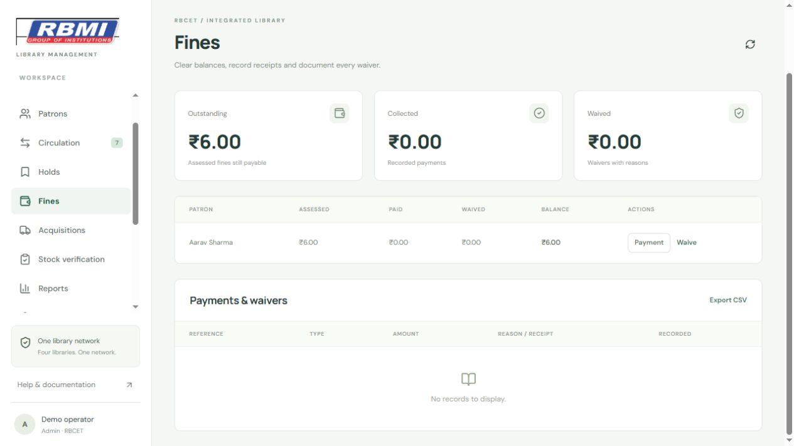
Screen 1. A sample assessed fine appears after an overdue return. Review assessed, paid, waived and outstanding amounts.
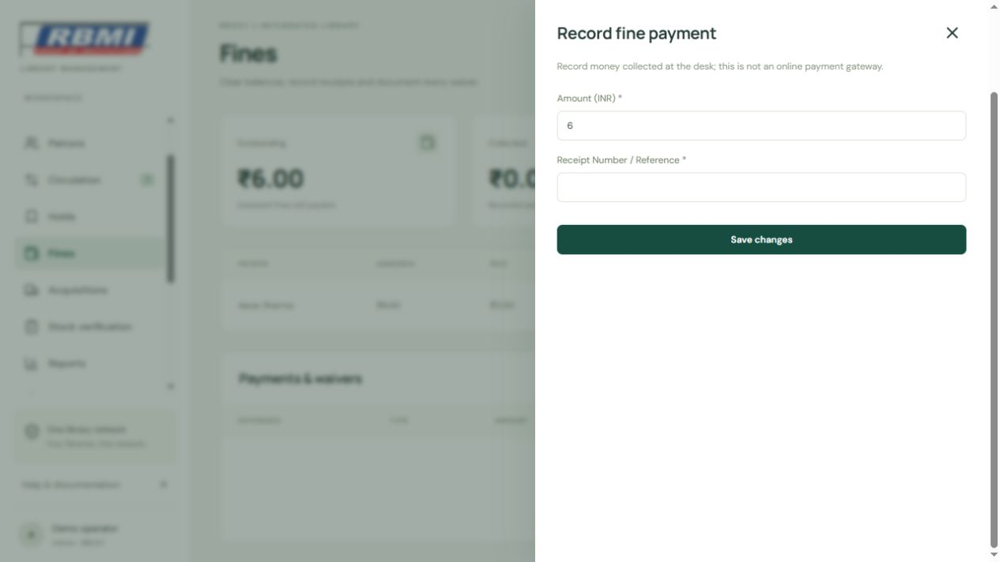
Screen 2. Payment records money already collected at the desk. Enter the amount and receipt/reference; waivers need an approval reason.
Acquisitions, budgets, funds and baskets
Acquisitions track vendors, orders and full receipt of copies. Budget/fund and vendor-basket controls implement the targeted workflows from the supplied Koha manuals.
How to use this section
Add a vendor and the bibliographic title to purchase.
Create a dated budget and allocate funds with unique codes. Total fund allocations cannot exceed the budget.
Create a vendor basket if grouping purchases. Order with vendor, title, invoice, quantity and unit price; optionally select fund and basket.
For a funded order, the budget must be current, basket vendor must match and committed plus received value must fit the fund.
Receive an ordered acquisition once, supplying accession/barcode prefixes. Receipt creates the full ordered quantity atomically.
Review order status, receipt dates and fund commitments. Export orders for accounts reconciliation.
Notes and limits
Unfunded orders are permitted; operationally select the approved fund when budget control is required.
Partial receipt, EDI, foreign-currency conversion, accounting ledgers and hierarchical subfunds are outside this release.
Screen guide
Captured from the application with sample records. Screen values are examples; your records and permissions may differ.
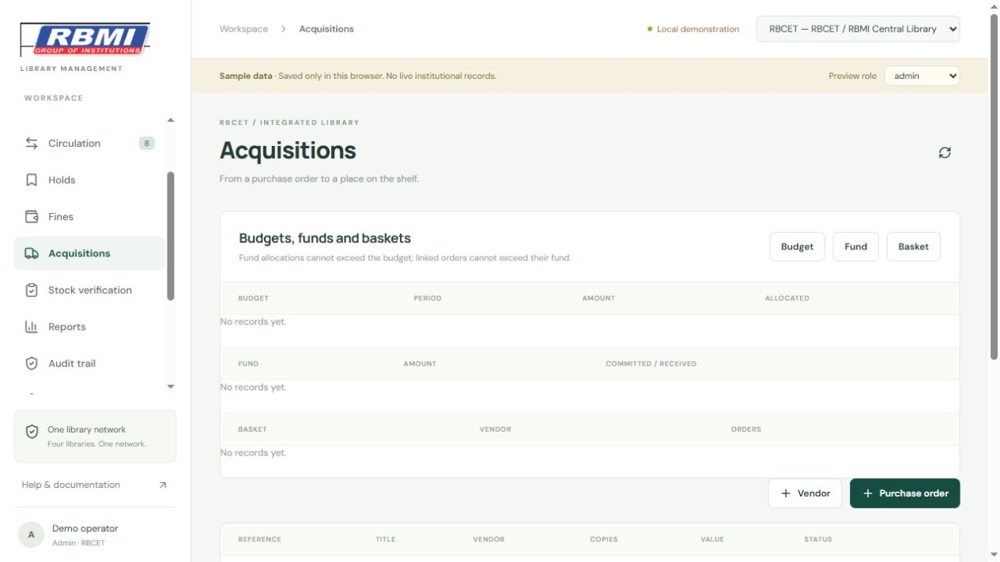
Screen 1. Manage budgets, funds, baskets and purchase orders within the selected library.
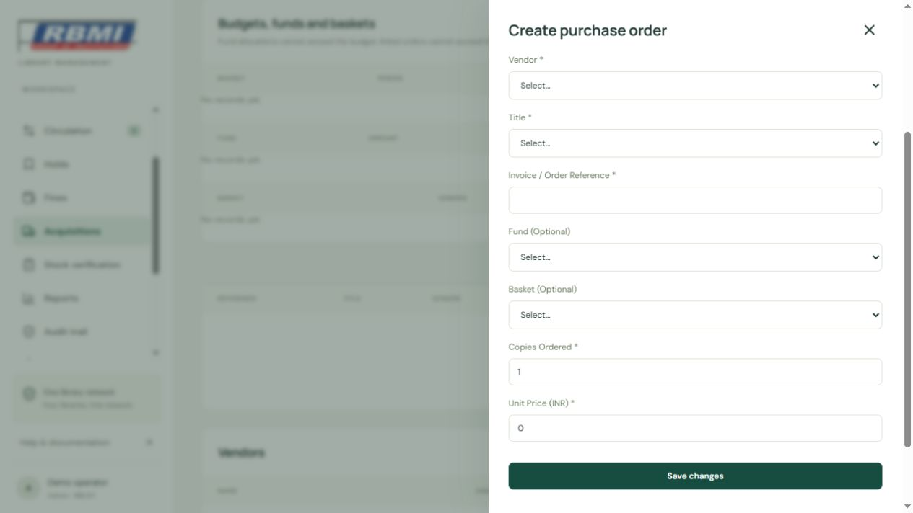
Screen 2. Choose the vendor, title, optional fund/basket, quantity and invoice reference before saving the order.
Authority control
Authorities standardize personal names, corporate names and subjects and link them to bibliographic titles in the same library.
How to use this section
Open Authorities and create a personal, corporate or subject heading with preferred text and optional variants/notes.
Review spelling and punctuation to avoid duplicate standardized headings.
Use Link title to associate the heading with a local title. Cross-library associations are rejected.
Inspect linked titles while maintaining a heading and use available edit controls for corrections.
Notes and limits
This is a local heading/link workflow.
Full authority MARC editing, external harvesting and automatic global heading replacement are not implemented.
Screen guide
Captured from the application with sample records. Screen values are examples; your records and permissions may differ.
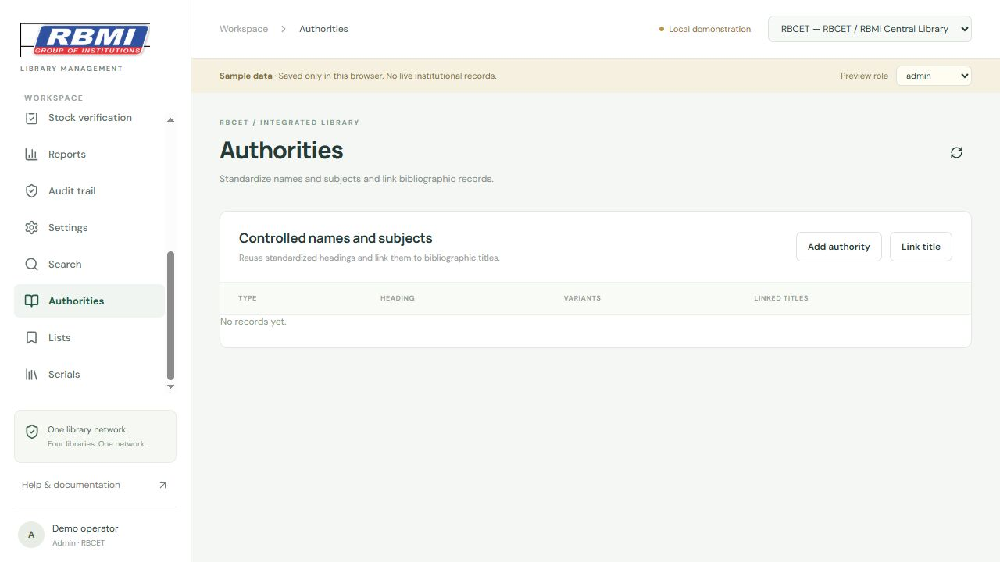
Screen 1. Authority control standardizes names and subjects. Use Add authority, then Link title to connect records.
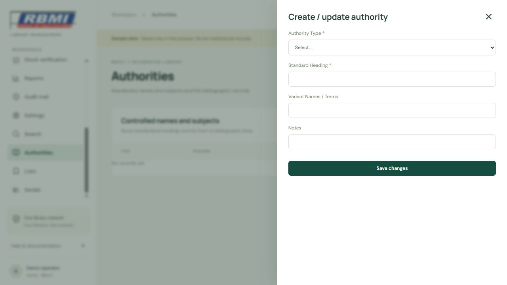
Screen 2. Choose the authority type, enter its heading and add useful variants or notes.
Private and public reading lists
Lists collect titles for study or display. Private lists belong to their owner; public lists are visible to authenticated users in the same library.
How to use this section
Open Lists and create a name with private or public visibility.
Choose titles to add and the offered sort option. Only the owner can add or remove entries.
Review list contents and remove unwanted titles.
Use Holds separately to reserve a title for borrowing.
Notes and limits
Public list visibility is library-scoped and authenticated; it is separate from the anonymous OPAC cart.
Lists do not reserve physical copies and do not bypass circulation rules.
Screen guide
Captured from the application with sample records. Screen values are examples; your records and permissions may differ.
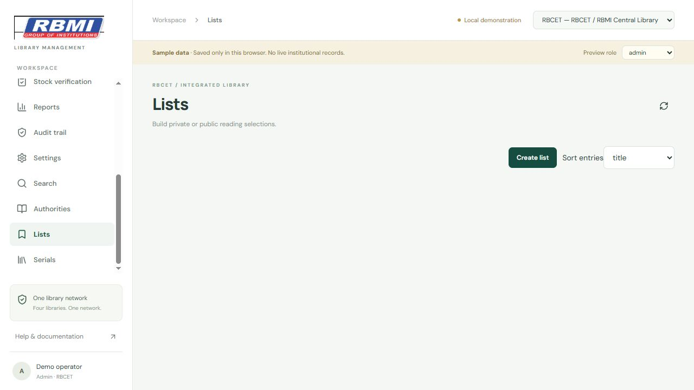
Screen 1. Create a reading list, choose its visibility and add titles. Private lists remain restricted to their owner.
Serial subscriptions and receiving
Serials manage journal subscriptions, expected issues and arrival states, separately from ordinary physical-copy circulation.
How to use this section
Create a subscription with title, frequency, first issue date and predicted issue count.
Select weekly, monthly, quarterly or yearly. Generate at most 120 issues per subscription.
Review expected dates/numbers. An anchor date of 31 January predicts 28 February and then 31 March.
Mark issues arrived, late or missing. Arrived issues store the receiving date.
Use statuses and expected dates for manual follow-up and reporting.
Notes and limits
Predictions do not send vendor claims automatically.
Irregular calendars, automated claims, routing and automatic circulating-item creation are outside this release. Create ordinary catalogue copies separately if needed.
Screen guide
Captured from the application with sample records. Screen values are examples; your records and permissions may differ.
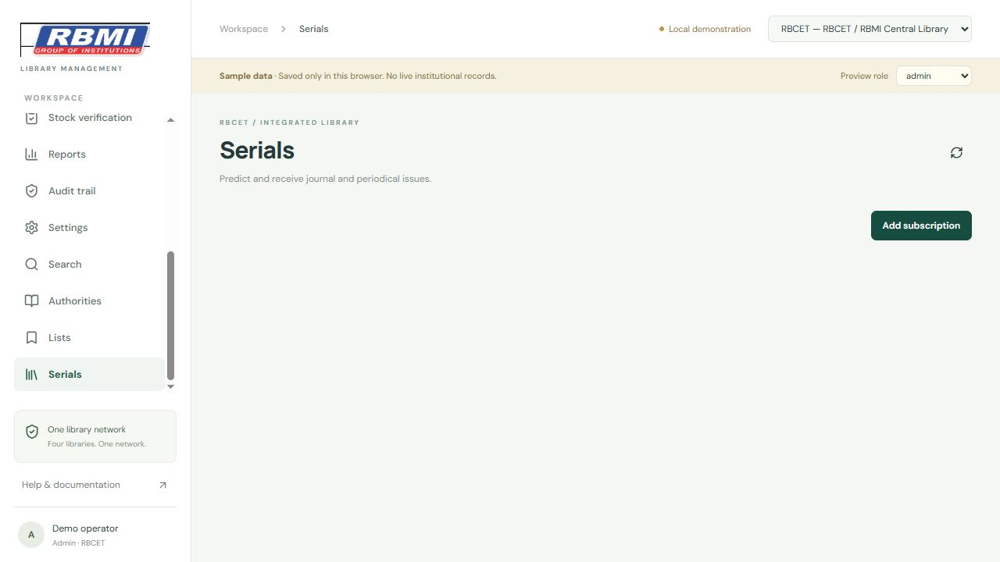
Screen 1. Add subscription begins the journal/periodical workflow; predicted issues appear after the subscription is saved.
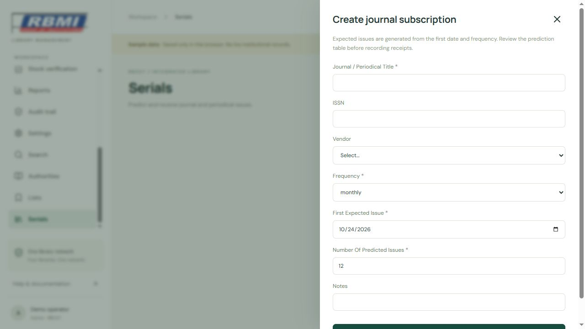
Screen 2. Enter the journal title, frequency, start date and issue count. Review predictions and mark issues received or missing.
Advanced catalogue and item search
Search combines text terms with physical-copy condition and recorded checkout history in the selected library.
How to use this section
Choose title, author, ISBN, subject, classification, barcode, accession or shelf as the search field.
Enter one or two terms. AND requires both, OR accepts either and NOT excludes the second term in the selected field.
Filter by available, loaned, lost, damaged, missing or withdrawn status.
Use Checkout count at most and Last checkout on/before for low-use analysis. Never-issued copies have no last date and remain eligible for the date filter.
Review the first 100 rows or export all matches to CSV.
Notes and limits
This is a simple Boolean filter, not a full search-engine query language.
A stock spreadsheet does not contain historical circulation. Imported copies start at zero recorded checkouts until issued in this application.
Screen guide
Captured from the application with sample records. Screen values are examples; your records and permissions may differ.
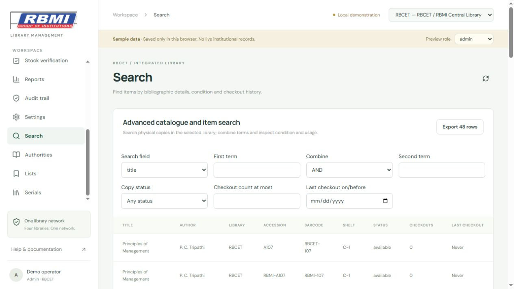
Screen 1. Combine bibliographic, item-status and checkout filters. The result grid and CSV export reflect the chosen criteria.
Public catalogue and temporary cart
Open Browse public catalogue or https://rbmi-ilms.vercel.app/?opac=1 without a staff account.
How to use this section
Select a library and search title, author, ISBN or subject.
Review publisher/year, classification and exact availability totals. Only a small preview of physical copies is shown on each title card.
Use Previous titles / Next titles to browse. Select Browse physical copies, then First copies / Next copies to read accession, shelf and status in pages of 50. Add titles to the temporary cart and print the selection/catalogue page.
Return through Staff / reader sign in. Linked patrons manage their own loans and holds only after authentication.
Notes and limits
Anonymous data contains library names, bibliographic records and limited holdings. It excludes patron details, accounts, prices, fines and audit history.
Cart selections are temporary and reset on refresh. Purchase suggestions, reviews, tags, ratings and anonymous holds are outside this release.
Screen guide
Captured from the application with sample records. Screen values are examples; your records and permissions may differ.
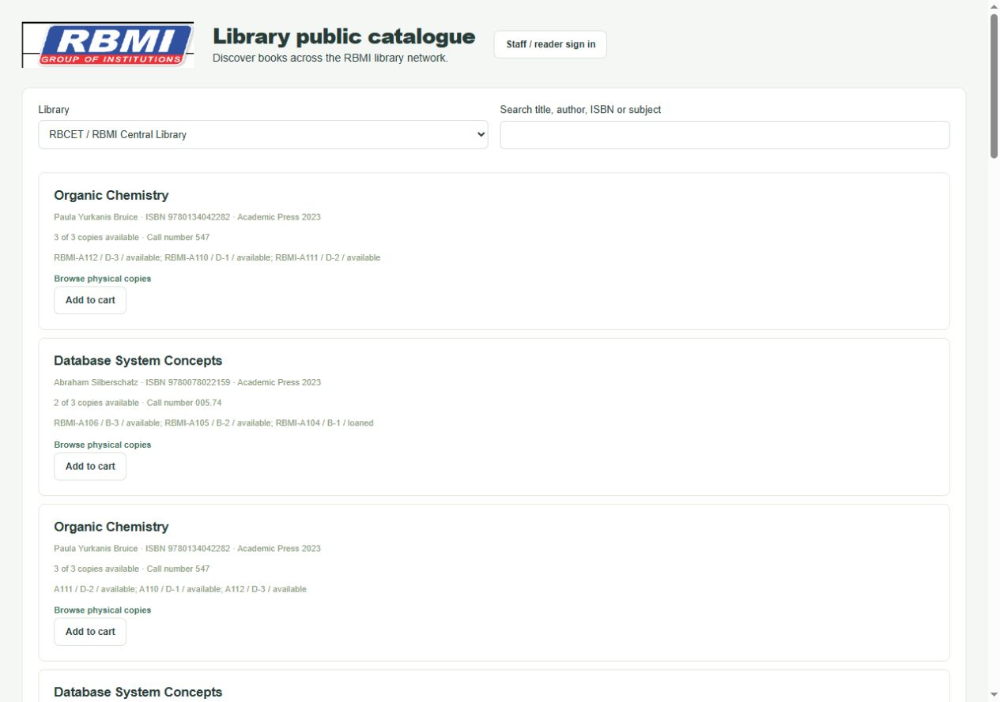
Screen 1. Title cards show exact availability counts with limited copy previews. Browse physical copies and Previous / Next controls load bounded pages.
Stock verification
Stock verification compares scanned barcodes with a fixed collection snapshot. One open session is allowed per library.
How to use this section
Open Stock verification and create a named session for the selected library.
Scan copies against the session. Repeated scans do not add duplicate expected records.
Review seen and unseen items, especially copies that were already on loan at session start.
Investigate discrepancies before closing. Confirm closure and inspect resulting copy statuses.
Export findings for approval. Correct later copy status through Catalogue with a reason.
Notes and limits
The expected inventory is fixed at session creation; reconcile later acquisitions and circulation separately.
Do not classify every unscanned item as permanently lost without physical and circulation checks.
Screen guide
Captured from the application with sample records. Screen values are examples; your records and permissions may differ.
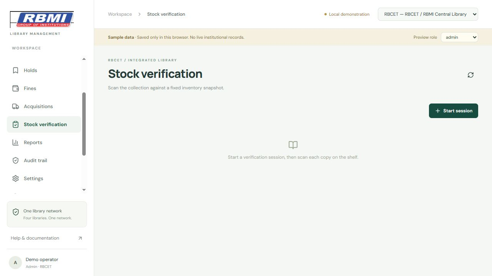
Screen 1. Start session creates an inventory snapshot. Existing sessions later show scan progress and discrepancies.
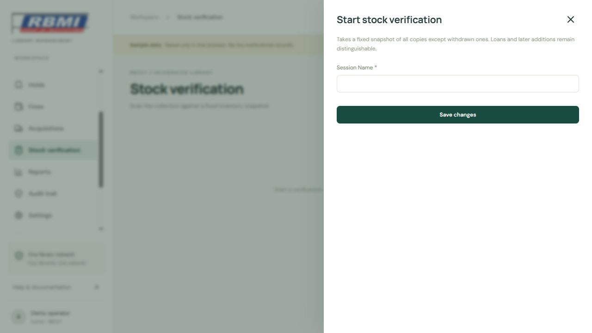
Screen 2. Give the stock-verification session a clear name, start it, then scan copies against that snapshot.
Reports and saved definitions
Reports can be viewed inside the application or downloaded as PDF or CSV. Every report uses the selected library. Standard reports cover the collection, circulation history, overdue loans, fines, patrons, acquisitions and most borrowed titles.
How to use this section
Select the correct library at the top, open Reports, and choose View report on a standard report card. The report opens on the same page; downloading a file is optional.
Use Search this report to narrow the rows. Choose 25, 50 or 100 rows per page and use Previous page / Next page. Use the horizontal scrollbar to read columns that extend beyond the screen.
Select Export PDF or Export CSV in the open report to export every matching row across all pages. Export buttons on a report card download the complete unfiltered report.
PDF includes the library code/name, report title, generation time in IST, row count, repeated column headings and page numbers. Wide tables can continue columns on another page; use the repeated # column to match rows.
For large PDFs, a progress message shows pages prepared. You can keep using the page or select Cancel PDF. Search before exporting if you only need a subset of records.
To create a saved report, select Create report, enter its name and dataset, and optionally set From / To dates. Date limits apply to loans, acquisitions and journal issues. Collection, patron and fine datasets are current snapshots.
Choose Run / view report beside a saved definition. Its results open in the same viewer, with search, pagination, PDF and CSV options. Applied date limits also appear in the PDF.
If no records match, the viewer states that clearly and PDF exports show zero matching records. Refresh data using the main refresh button after colleagues make changes.
Notes and limits
Exports include all matching records, not just the page on screen. Search is across the displayed report columns.
Complete reports are fetched on demand through bounded database pages; the smaller workspace preview is never used as a complete register. CSV and PDF contain the same matching rows and exclude passwords and authentication secrets.
PDF files are prepared in the browser. Completed exports can contain private institutional records; share them only with authorized people.
Report preparation can be cancelled. Exports stop with an explicit error if a dataset exceeds 50,000 records; use a saved report with narrower dates instead of accepting a partial file.
Screen guide
Captured from the application with sample records. Screen values are examples; your records and permissions may differ.
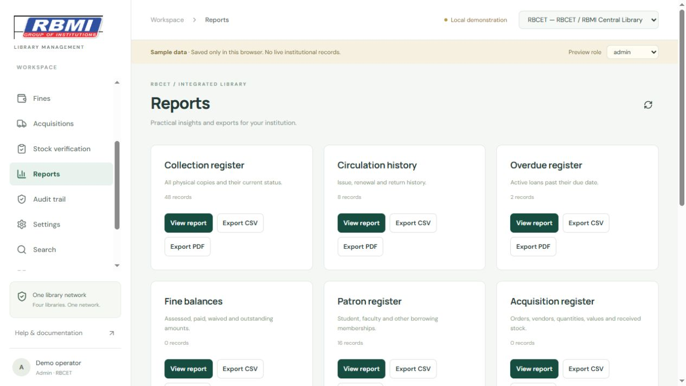
Screen 1. Each standard report offers View report, Export CSV and Export PDF. Choose the library before opening a report.
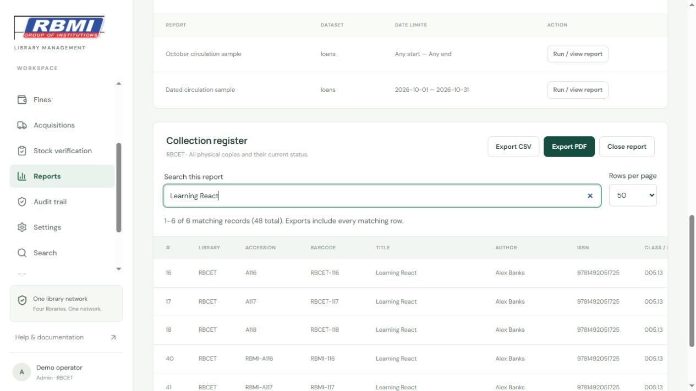
Screen 2. The on-screen viewer shows the matching count, search, rows per page and export controls. Exports include every matching row, not just this page.
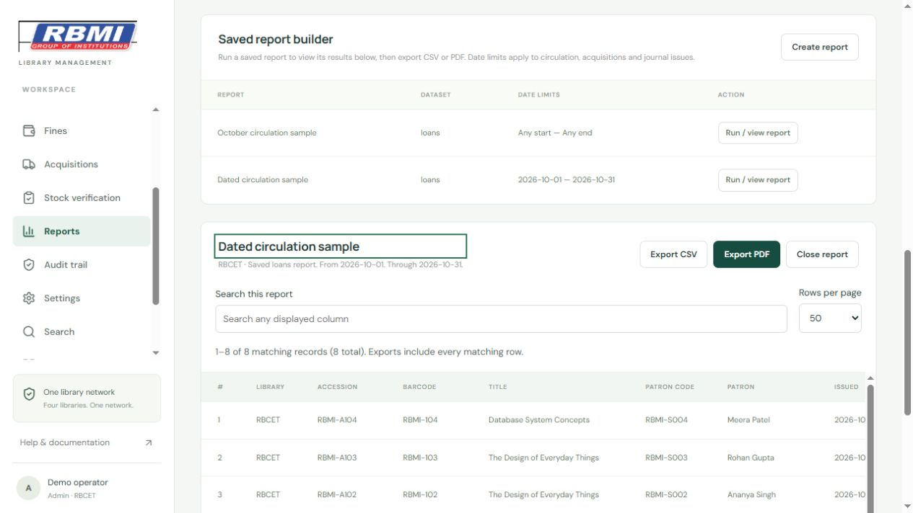
Screen 3. A saved circulation report shows its date limits and results inside the same viewer. It can also be exported as PDF or CSV.
Administration and audit trail
The network administrator manages the four libraries. Authorization is checked on each database/API request.
How to use this section
Select the correct library before changing policies, holidays or assignments in Settings.
Holiday calendar: download the CSV template in Settings. Fill date,name with one approved holiday per row, dates in YYYY-MM-DD format, then save as CSV UTF-8. Upload up to 1,000 dates, review the preview and select Approve and import. Existing dates update names; omitted dates are retained. Each library has its own calendar.
For an unplanned closure, select Add additional holiday, enter the date and holiday name, and save. Only the administrator can upload or add holidays. Invalid dates or duplicate dates reject the entire upload.
Create staff using real email addresses and unique temporary passwords. Creating a librarian also assigns that library's primary librarian.
To replace a librarian, use Assign librarian with the existing Auth UUID and display name. The former primary librarian membership is removed from that library.
Assign assistant, accountant, auditor or linked patron memberships in Institution access. Another network admin cannot be created here.
Open Audit trail, search by action/actor/details, expand stored details and export authorized records.
Review availability changes, account operations, imports, returns and fine waivers in particular.
Audit and membership tables use Previous / Next database pages. Other growing workflow sections show Load next controls when more data exists. Their local search covers records loaded so far. Account lists load 100 Auth users at a time.
Notes and limits
The administrator email is fixed in the account UI. An administrator-identity change requires deliberate trusted database maintenance.
Audit records have no user-facing deletion. Passwords are not stored in audit details.
Uploaded and additional holidays are excluded from overdue fine days. They also move newly calculated due dates to the next open day. Already assessed fines are retained; use an authorized audited waiver where appropriate.
Large audit details are summarized in lists and CSV. Open View details > Load full audit details and use Previous / Next detail part to inspect the complete preserved payload.
Screen guide
Captured from the application with sample records. Screen values are examples; your records and permissions may differ.
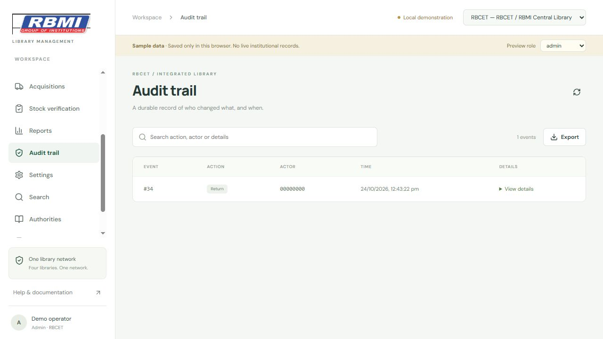
Screen 1. Audit trail records the operator, action, time and non-secret details. Search or expand entries for an authorized review.
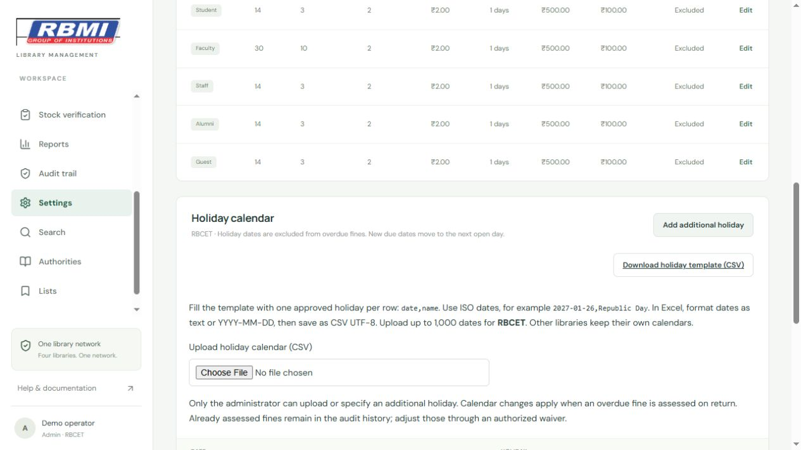
Screen 2. In Settings, download the holiday template and upload approved dates for the selected library. RBGN can have its own list.
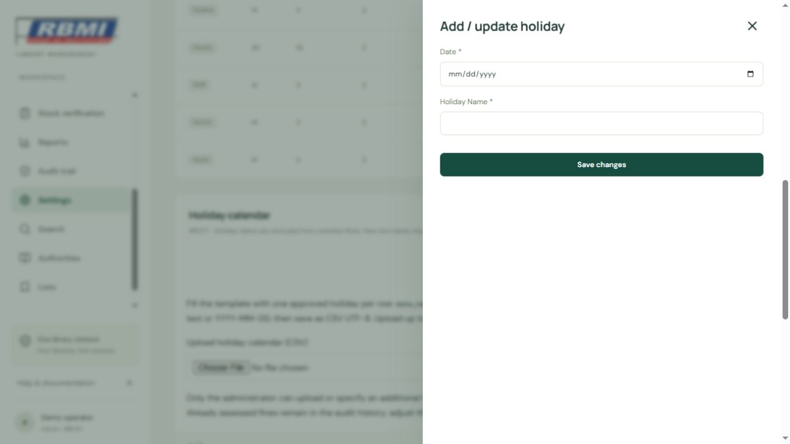
Screen 3. Add additional holiday records an unplanned closure. Only the administrator can save it; the date is excluded from fines.
Developer installation and deployment
The source repository is drrahulrastogi/rbmi-ilms. The UI and account endpoints run on Vercel; shared records and Auth run on Supabase.
How to use this section
Install Node.js 20.16 or newer, run npm ci, npm test and npm run build. npm run dev starts local development. Without both Supabase variables it uses fictional browser-local records.
For a NEW Supabase project run database/install-new-supabase.sql once, containing all twelve migrations and the policy/institution seed. Never run the creation installer over an existing library.
Disable public signup, keep email/password login enabled, create rahul.r@rbmi.in in Auth and run scripts/bootstrap-admin.sql with its UUID.
Set VITE_SUPABASE_URL and VITE_SUPABASE_ANON_KEY to the public URL/key. Set SUPABASE_SERVICE_ROLE_KEY only as a sensitive server-side Vercel variable; never prefix it with VITE_.
Set Auth Site URL to the HTTPS application; allow /?recovery=1 and /?setup=invite. Configure invite/recovery SMTP and require strong passwords. New invitations use the provider's one-use email link and a 24-hour application setup deadline; provider link expiry may be shorter.
Deploy the repository root to the intended Vercel Vite project. vercel.json runs tests before the build. The current release uses authenticated CLI deployment; GitHub source hosting alone does not imply automatic Vercel deployment.
For an existing installation, back up first and apply only missing migrations in order. Never recreate the original schema over live data.
Notes and limits
PostgreSQL provides transactional circulation and unique identifiers. Supabase supplies managed database/Auth and Vercel serves the UI and server endpoints.
Free plans have quotas and provider-controlled pause/retention rules. Check dashboards before scaling. No paid upgrade is enabled by this release.
Vercel adds Content-Security-Policy and Permissions-Policy headers. Account endpoints use shared per-IP and per-user quotas, return 429 with Retry-After, and emit redacted structured logs. The GitHub health workflow checks /api/health and the public page every 15 minutes after publication. Configure repository workflow-failure notifications for alerts.
Screen guide
Captured from the application with sample records. Screen values are examples; your records and permissions may differ.
Screen 1. After deployment, verify the library selector and connection indicator. This screenshot is a sample workspace; live mode shows Supabase connected.
Backup, restore and private handover
The public source package includes schema and fictional seeds, not live students, staff passwords or original private workbooks.
How to use this section
Use an authorized database dump or trusted SQL export for all app tables, source archives and audit records. Store backups in a protected off-site location.
Inventory the Supabase/Vercel projects, environment variable names and SMTP setup. Keep secret values in an approved password manager.
Plan Supabase Auth identity backup/migration separately through supported tools. A patron CSV is not an Auth backup.
Before upgrades/imports take a verified backup and retain original Excel files and reconciliation reports.
Restore into a separate project and verify counts, memberships, loans, fines and recovery settings before trusting a restore procedure.
Treat initial-password CSVs as private handover files that become outdated after password changes; use recovery instead of assuming old passwords remain valid.
Notes and limits
A synthetic local PostgreSQL restore drill compared hashes for all 35 app/Auth-stub tables, restored sequences and verified a post-restore write. This does not certify production disaster recovery, hosted Supabase Auth, Storage or point-in-time recovery. Take protected production backups and verify a separate hosted restore before relying on them.
Clearing browser storage removes local demonstration records, not live Supabase data.
Screen guide
Captured from the application with sample records. Screen values are examples; your records and permissions may differ.
Screen 1. Register exports support authorized record review. Follow the backup chapter for database backups; CSV exports are not a complete database backup.
Troubleshooting and Koha coverage limits
The supplied Koha documentation informed the acquisition, advanced/item search, authority, migration, circulation, lists, OPAC, patron, report and serial workflows. This application implements the targeted workflows, not complete Koha compatibility.
How to use this section
Wrong password: use the registered React-library email and email recovery. A NetBeans/Derby account or patron number is a different identity.
No membership: ask admin to assign the correct library/role. A replaced librarian may retain an Auth identity without access to the old library.
Issue rejected: check library code, copy status, active membership, expiry, loan limits, overdue loans, balance threshold and hold priority.
Fine seems wrong: inspect saved policy, eligible dates, holidays, availability, grace and cap. Already-posted charges require an authorized waiver when correcting past dates.
No email: inspect spam, use the latest request, verify the address, SMTP limits and Auth redirect settings. The owner confirmed administrator recovery-email delivery during setup.
Import fails: inspect required columns, duplicates and invalid numbers. A failing batch rolls back.
Slow catalogue: narrow the search and use Show more. Holdings load through secure server pages. Very large audit histories may require additional pagination.
Too many requests (429): wait for the Retry-After period, then retry. MFA prompt: enter the current authenticator code. Invitation expired: ask the librarian/admin to resend setup email; discard older links.
Notes and limits
Outside scope: offline circulation, RFID/SIP2, EDI, SSO, federated discovery, complex serial schedules, automated claims/hold emails, purchase suggestions, reviews/tags, partial receipts and full MARC editing/export.
Same-library returns intentionally prevent inter-library returns. Report errors without sharing passwords, private keys or student exports.
Screen guide
Captured from the application with sample records. Screen values are examples; your records and permissions may differ.
Screen 1. For import errors, check the template headers, TRUE/FALSE, ISO expiry dates and institute assignment before retrying.